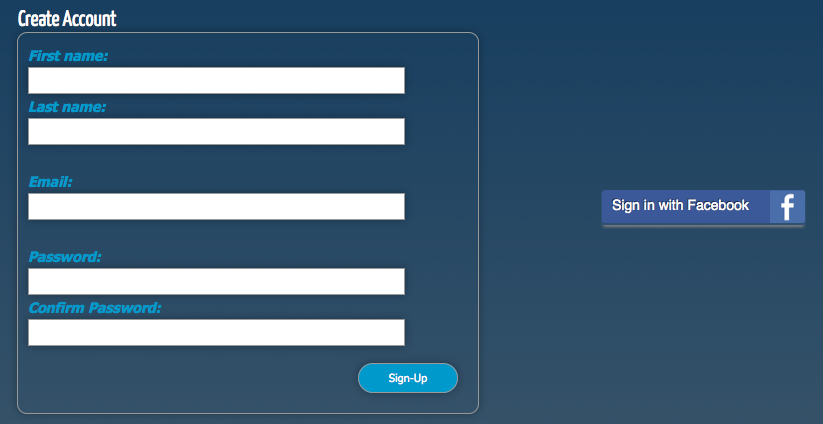
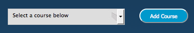
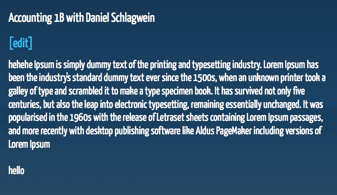
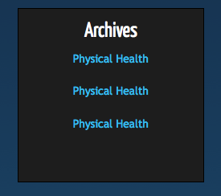
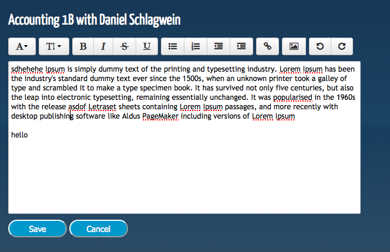
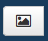

Frequently Asked Questions
This page is designed to be used like a user guide for this website. Here are all the frequently asked questions aswell as some add extra to help you get the most out of this website.
- How do I sign up to the website?
There are two ways that you can sign up to the website. The first is through our sign-up section. All you have to do is fill out the your name, email and a password. The second is by clicking the Facebook button on the right and using your Facebook profile. Each way will create an account and give you access to the notes.
 - How do I subscribe to a course? Is it for free?
To subscribe to a course all you have to do is choose your course from the list and click "Add Course". For the moment course are free however in the near future we will add a small subscription fee ($1 per course) to help with administration costs.
 - Once I have subscribed, how do i view the notes?
All you have to do is click on the course that you want to view from the "Current Courses" section on your account page.
 - What are the archives? Can I edit them?
Archives are the previous semesters notes. Each semester starts with a blank set of notes. It is up to the current students to fill in the notes. Students can copy and paste relevant information from the archives into the current. Archives cannot be edited. They are locked after each semester.
 - How do I add/edit the notes?
To edit/add to notes all you have to do is click the "[Edit]" on the course page. That will take you to a rich text editor where you can add or edit the current set of notes. Only one person can edit the notes at a time.
 - Can I insert a picture within the notes?
Yes you can insert a picture within the notes. Click on the insert picture button on the rich text editor toolbar.
 - Can I view the notes using my mobile device? Is there a mobile application?
For the moment the website isn't fully mobile compatible however you can view them if you have a web browser. Quality may however be compromised. A mobile device is currently out-of-scope however it is defiantly a future improvement.